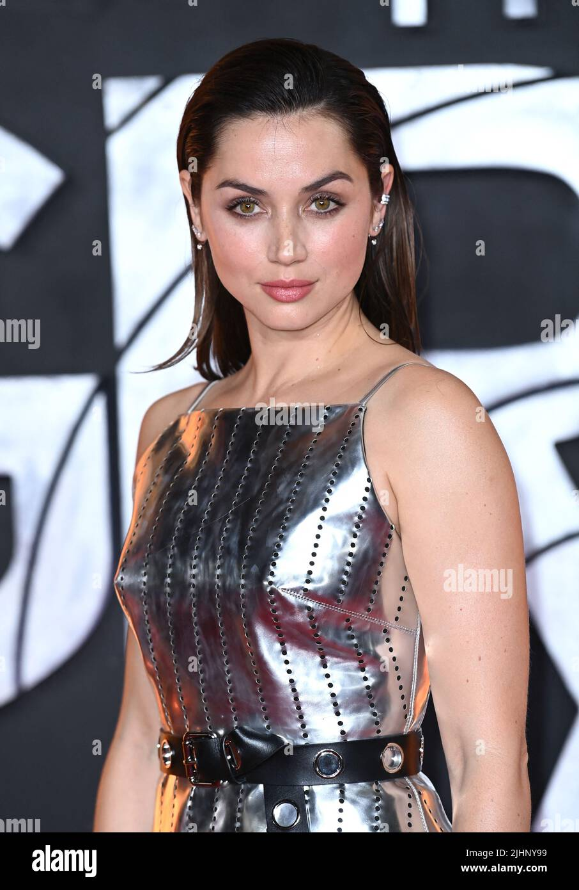

Ana Celia de Armas Caso (Spanish pronunciation: [ˈana ˈselja ðe ˈaɾmas ˈkaso]; born 30 April 1988)[1] is a
Cuban-born actress[2] holding Cuban,[2] Spanish,[3] and American citizenship.[4] She has been nominated for
several accolades, including an Academy Award, an Actor Award, a BAFTA, and two Golden Globes.
She began her career in Cuba with a leading role in the romantic drama Una rosa de Francia (2006). At the age of
18, she moved to Madrid, Spain, and starred in the popular drama El Internado (2007–2010). After moving to Los
Angeles, de Armas had English-speaking roles in the psychological thriller Knock Knock (2015) and the
comedy-crime film War Dogs (2016).
De Armas rose to prominence for her roles as the holographic AI Joi in the science fiction film Blade Runner
2049 (2017) and nurse Marta Cabrera in the mystery film Knives Out (2019), receiving a nomination for the Golden
Globe Award for Best Actress – Motion Picture Comedy or Musical. She then played Paloma in the James Bond film
No Time to Die (2021) and actress Marilyn Monroe in the biographical drama Blonde (2022), for which she became
the first Cuban nominated for the Academy Award for Best Actress. She then led the action thriller Ballerina
(2025), a spinoff installment in the John Wick franchise.
Early life
De Armas was born in Havana, Cuba,[1] and raised in Santa Cruz del Norte.[5] Her father Ramón de Armas held a
range of positions throughout his career, including bank manager, teacher, school principal, and deputy
mayor.[6] He had previously studied philosophy at a Soviet university.[6][7] Her mother Ana Caso served in
the human resources department of the Ministry of Education.[8][9][10] Caso's parents were Spanish
immigrants to Cuba from Valverde de la Sierra [es] in León and Guardo in Palencia, both in northern
Spain.[11][12][13] De Armas has one older brother, Francisco Javier de Armas Caso, an American–based
photographer[6][14] who, in 2020, was questioned by Cuban police due to his critical stance on Decree 349
and his links to artists under government surveillance.[15] Although de Armas grew up amid food rationing,
fuel shortages, and electricity blackouts during Cuba's Special Period,[6][16] she has described her early
years as happy.[8]

During her childhood and adolescence, de Armas had limited knowledge of popular culture beyond Cuba.[17][18]
She was allowed to watch "20 minutes of cartoons on Saturday and the Sunday movie matinee."[19] Her family
did not own a VCR, and she watched Hollywood movies in her neighbor's apartment.[20] She memorized and
practiced monologues in front of a mirror,[21][22] and decided to become an actress when she was 12.[23] In
2002, aged 14, she successfully auditioned to join Havana's National Theatre of Cuba.[8][24] She sometimes
hitchhiked to attend the "rigorous" course.[25][26] While a student, she filmed three movies.[6][9] She left
the four-year drama course shortly before presenting her final thesis because Cuban graduates are forbidden
from leaving the country without first completing three years of mandatory service to the community.[9][27]
At age 18, with Spanish citizenship through her maternal grandparents,[11][16] she moved to Madrid to pursue
an acting career.[9]
Career
Career beginnings in Spanish cinema (2006–2013)
Career beginnings in Spanish cinema (2006–2013)
In her native Cuba, de Armas had a starring role opposite Álex González in Manuel Gutiérrez Aragón's
romantic drama Una rosa de Francia (2006).[16] Cuban actor Jorge Perugorría suggested that the director
consider de Armas for the role, after meeting her while attending a birthday party with his
daughters.[28][29] The director visited de Armas's drama school and interrupted the sixteen-year-old during
her audition to inform her that the role was hers.[28][30] She travelled to Spain as part of a promotional
tour for the film and was introduced to Juan Lanja, who would later become her Spanish agent.[28] She then
starred in the movie El edén perdido (2007) and had a supporting role in Fernando Pérez's Madrigal (2007),
filmed at night without the permission of her drama school tutors.[9]
At age 18, de Armas moved to Madrid. Within two weeks of arriving, she met with casting director Luis San
Narciso, who had seen her in Una rosa de Francia.[17] Two months later,[31] he cast her as Carolina in the
drama El Internado,[9] in which she starred for six seasons from 2007 to 2010. The television show, set in a
boarding school, became popular with viewers and made de Armas a celebrity figure in Spain.[9] In a break
from filming, she starred in the successful coming-of-age comedy Mentiras y Gordas (2009).[32] Despite the
popularity of El Internado, de Armas felt typecast and was mainly offered roles as youngsters.[17] She asked
to be written out of the show in its second to last season.[33]
After spending a few months living in New York City to learn English,[27] de Armas was persuaded to return to
Spain to star in seventeen episodes of the historical drama Hispania (2010–2011).[5] She then starred in
Antonio Trashorras's horror films El callejón (2011) and Anabel (2015),[34] and in the drama Por un puñado
de besos (2014).[35] During a long period without acting work,[25] de Armas participated in workshops at
Tomaz Pandur's Madrid theatre company[6] and felt "very anxious" about the lack of momentum in her
career.[19]
At age 18, de Armas moved to Madrid. Within two weeks of arriving, she met with casting director Luis San
Narciso, who had seen her in Una rosa de Francia.[17] Two months later,[31] he cast her as Carolina in the
drama El Internado,[9] in which she starred for six seasons from 2007 to 2010. The television show, set in a
boarding school, became popular with viewers and made de Armas a celebrity figure in Spain.[9] In a break
from filming, she starred in the successful coming-of-age comedy Mentiras y Gordas (2009).[32] Despite the
popularity of El Internado, de Armas felt typecast and was mainly offered roles as youngsters.[17] She asked
to be written out of the show in its second to last season.[33]
After spending a few months living in New York City to learn English,[27] de Armas was persuaded to return
to Spain to star in seventeen episodes of the historical drama Hispania (2010–2011).[5] She then starred in
Antonio Trashorras's horror films El callejón (2011) and Anabel (2015),[34] and in the drama Por un puñado
de besos (2014).[35] During a long period without acting work,[25] de Armas participated in workshops at
Tomaz Pandur's Madrid theatre company[6] and felt "very anxious" about the lack of momentum in her
career.[19]
Transition to Hollywood and breakthrough (2014–2019)
With encouragement from her newly hired Hollywood agent, she decided to move to Los Angeles.[17] When de
Armas first arrived in Los Angeles in 2014,[36] she had to start her career again "from scratch."[20] She
spoke very little English and, during early auditions, she often "didn't even know what [she] was
saying."[7] She spent four months in full-time education to learn English,[37][33] not wanting to be
confined to playing characters written specifically for Latina actresses.[9] She starred opposite Keanu
Reeves in her first Hollywood release—Eli Roth's erotic thriller Knock Knock (2015)—and learned her lines
phonetically.[38] Despite giving a positive review of the film, Randy Cordova of the Arizona Republic found
de Armas to be "unconvincing" in her role.[39] Reeves then telephoned de Armas to invite her to star in a
Spanish-language role in the thriller Daughter of God which he acted in and produced.[40] Producer Mark
Downie hoped the film would be a star vehicle for de Armas, but due to executive meddling, Daughter of God
was severely edited with de Armas' former starring role reduced. The film was ultimately released as Exposed
in 2016.[41][42] Frank Scheck of The Hollywood Reporter noted that while she was "appealing" in her part, de
Armas was unable to demonstrate her "character's intense emotional demands."[43]
De Armas had a supporting role in Todd Phillips's War Dogs (2016), acting opposite Miles Teller as the wife
of an arms dealer, and again learned her lines phonetically.[44] David Ehrlich of IndieWire found her to be
"memorable in a thankless role".[45] She starred opposite Édgar Ramírez in the biopic Hands of Stone (2016)
as the wife of Panamanian boxer Roberto Durán. Despite its delayed release, Hands of Stone was the first
Hollywood film de Armas had filmed. While still living in Madrid, she was contacted by director Jonathan
Jakubowicz, who had watched her in El Internado,[33] who asked her to travel to Los Angeles to audition for
the Spanish-language part.[16] In reviewing the film, Christy Lemire of RogerEbert.com described de Armas as
"a hugely charismatic presence. But except for a couple of showy moments, she gets little to do besides
function as the dutiful wife."[46]
In Denis Villeneuve's futuristic thriller Blade Runner 2049 (2017), de Armas had a supporting role as Joi,
the holographic AI girlfriend of Ryan Gosling's character, a blade runner. Mark Kermode of The Guardian said
she "brings three-dimensional warmth to a character who is essentially a digital projection."[47] Anthony
Lane of The New Yorker found her to be "wondrous": "Whenever Joi appears, the movie's imaginative heart
begins to race."[48] While the performance was initially discussed as a breakthrough role,[49][36] the film
underperformed commercially, and de Armas spent much of the following year in her native Cuba, where she
purchased a house.[38] For her performance, she earned a nomination for the Saturn Award for Best Supporting
Actress. Also in 2017, she had a supporting role in the action thriller Overdrive as the love interest to
Scott Eastwood's character.[50] Stephen Dalton of The Hollywood Reporter wrote that she "radiates more
kick-ass charisma than her thankless sidekick role might suggest."[51]
In 2018, de Armas starred opposite Demián Bichir in John Hillcoat's medical drama Corazón. She played a
Dominican woman with congestive heart failure in the short film, funded by Montefiore Medical Center to
raise awareness of organ donation.[52] While de Armas's scenes opposite Himesh Patel in the 2019 romantic
comedy Yesterday were included in the film's trailer, they were cut from the final product. The director
Danny Boyle said that, while de Armas was "really radiant" in her scenes, the introduction of a love
triangle subplot did not test well with audiences.[53]
De Armas' role as an immigrant nurse in the ensemble murder mystery film Knives Out (2019), written and
directed by Rian Johnson, was widely praised and marked a breakthrough for the actress.[54] When first
approached about the project, she was unenthusiastic about the idea of playing a stereotypical "Latina
caregiver" but soon realized that her character was "so much more than that."[55] Tom Shone of The Times
remarked, "The film's standout performance comes from its least well-known member, the Cuban de Armas, who
manages the difficult task of making goodness interesting."[56] Benjamin Lee of The Guardian said her
"striking" performance left a "lasting impression."[57] The film was a major box office success.[58] De
Armas was nominated for the Golden Globe Award for Best Actress – Motion Picture Comedy or Musical[59] with
her also winning the Saturn Award for Best Supporting Actress and the National Board of Review Award for
Best Cast with the cast.[60]
And mainstream recognition (2020–present)
De Armas starred in four films released in the United States in 2020. She had a supporting role in the crime
thriller The Informer as the wife of Joel Kinnaman's character.[61] Guy Lodge of Variety found "her thin
role all the more glaring in the wake of her Knives Out stardom."[62] She appeared as a femme fatale in the
noir crime drama The Night Clerk.[63] Brian Tallerico of RogerEbert.com said the film had "no idea" what to
do with her "blinding charisma"[64] while Katie Rife of The AV Club remarked that it would be remembered,
"if at all, as a movie de Armas was way too good for."[65] She starred opposite Wagner Moura in the Netflix
biopic Sergio (2020) as Carolina Larriera, a U.N. official and the partner of diplomat Sérgio Vieira de
Mello. John DeFore of The Hollywood Reporter found her "magnetic"[66] while Jessica Kiang of Variety said
she imbued the part "with an intelligence and will that makes her more than just de Mello's romantic
foil."[67] De Armas reunited with Moura to play the wife of one of the Cuban Five in Olivier Assayas's
Netflix spy thriller Wasp Network.[68] The film was shot on location in Cuba; it was de Armas's first work
in her home country since leaving as a teenager.[69] Glenn Kenny of The New York Times found her
"superb"[70] while Jay Weissberg of Variety described her as "a joyous, bewitching presence whose career
seems destined for the big time."[71]
In 2021, de Armas reunited with Daniel Craig to play a Bond girl in Cary Joji Fukunaga's No Time to
Die.[72][73] Fukunaga wrote the character of a Cuban CIA agent with de Armas in mind.[74] She described the
character as bubbly and "very irresponsible".[72] In her short appearance in No Time to Die, her character,
Paloma, claims to have little training, but proves to be highly skilled while fighting.[75] No Time to Die
was a commercial success, grossing $774.2 million worldwide, and earned positive reviews.[76][77][78][79]
Peter Bradshaw of The Guardian praised de Armas' "witty and unworldly turn".[80] De Armas starred in Adrian
Lyne's erotic thriller Deep Water, based upon the novel by Patricia Highsmith. She and Ben Affleck play a
couple in an open marriage.[81][82] In 2022, de Armas starred in the Russo brothers' Netflix action thriller
The Gray Man.[83] Neither Deep Water nor The Gray Man were particularly successful with critics and
audiences.[citation needed]
De Armas portrayed Marilyn Monroe (as Norma Jean) in the Netflix biopic Blonde (2022), based on the
biographical fiction novel of the same name by Joyce Carol Oates.[84] Director Andrew Dominik noticed de
Armas's performance in Knock Knock[85] and, while she went through a long casting process, Dominik secured
the role for her after the first audition.[86] In preparation, de Armas worked with a dialect coach for
about nine months,[87][7][5][88] read Oates' novel and also said she studied hundreds of photographs,
videos, audio recordings, and films to prepare for the role.[89] Despite criticism towards her casting, due
to her having a notable Spanish accent, de Armas' performance was praised; Catherine Bray of Empire labeled
de Armas' performance as "powerful", while Richard Lawson of Vanity Fair remarked that "De Armas is
fiercely, almost scarily committed to the role, maintaining high and focused energy through every torrent of
tears and screams and traumas."[90][91][92] She received a nomination for the Academy Award for Best
Actress, in addition to nominations for the BAFTA, Golden Globe and SAG Award in the same category.[93][94]
She became the first Cuban to be nominated for the first of these.[95]
De Armas next starred with Chris Evans in the Apple TV+ action comedy film Ghosted (2023).[96] Benjamin Lee
of The Guardian panned the film and the lack of chemistry between de Armas and Evans.[97] She appeared
alongside an ensemble cast in Ron Howard's survival thriller Eden (2024).[98] She then starred in the John
Wick spin-off action thriller Ballerina (2025), in which she portrayed a vengeful assassin.[99]
Personal life
De Armas holds Cuban, Spanish, and US citizenship.[100][101] She moved to Los Angeles at 26, and resides in
Vermont as of 2023.[102][103]
De Armas began a relationship with Spanish actor Marc Clotet in mid-2010. They married on the Costa Brava in
July 2011. They divorced in early 2013.[104][105] After meeting on the set of Deep Water in late 2019, de
Armas dated American actor Ben Affleck from March 2020 to January 2021.[106][107] De Armas received
significant criticism, particularly among members of the Cuban diaspora, after being photographed kissing
Anido Cuesta, the stepson of Cuban President Miguel Díaz-Canel in November 2024.[108] It was reported in
July 2025 that she was dating American actor Tom Cruise after she was spotted attending an Oasis concert
with him.[109] It has since been reported that the couple separated in October or November 2025.[110]